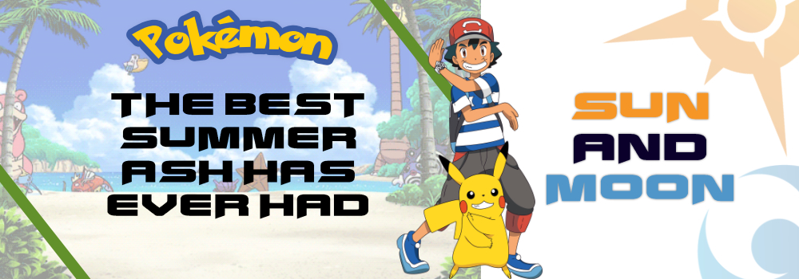

|  | ||||
|
|
|
||
It is where the protagonist Ash Ketchum begins his vacation as a Pokémon trainer in Alola. The island is known for its beautiful beaches, dense forests, and active volcanoes. Melemele Island is home to several important locations in the series, including Professor Kukui's Pokémon Lab, the Pokémon School, and the Melemele Island Battle Royale Dome, where Ash participates in several battles. It is also home to the first Trial Captain-Ilima |
|
Akala Island is known for its diverse geography, which includes dense forests, rocky mountains, and a vast desert. It is also home to several important locations in the anime, including the Pokémon Center, the Battle Royal Dome, and the Lush Jungle, where Ash and his friends participate in their first trial. Throughout their journey on Akala Island, Ash and his friends encounter and capture several new Pokémon, including Rockruff, Mudbray, and Fomantis. They also face off against a dangerous group known as Team Skull. It is the home to the three Trial Captains-Lana, Kiawe, and Mallow |
Ula'ula Island is known for its urban areas, including the bustling city of Malie City and the abandoned town of Po Town. The island also has several natural locations, including the beautiful Lake of the Moone and Lake of the Sunne, which are said to be connected to the legendary Pokémon Solgaleo and Lunala. In the anime, Ash and his friends encounter several challenges on Ula'ula Island, including a trial in which they must navigate a haunted supermarket and battle a group of Ghost-type Pokémon. They face off the two Trial Captains-Sophocles and Acerola |
|
Poni Island is known for its rugged terrain, including soaring cliffs, steep mountains, and a vast canyon. The island is also home to several important locations in the series, including the Altar of the Sunne and Altar of the Moone, where Ash and his friends must go to summon the legendary Pokémon Solgaleo and Lunala. In the series, Ash and his friends must complete a series of trials on Poni Island, including a trial in which they must navigate a treacherous mountain and battle a group of Dragon-type Pokémon. Throughout their journey on Poni Island, Ash and his friends encounter and capture several new Pokémon, including the powerful Kommo-o and the elusive Zeraora. They also face off the last Trial Captain-Mina |